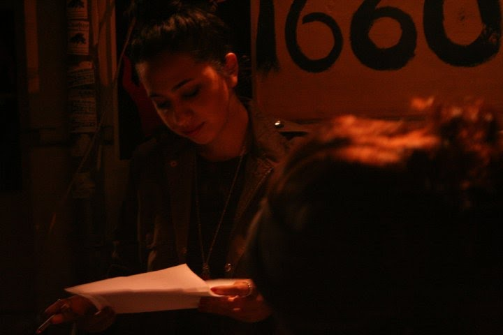

Prensa
Entrevistas
Algunas caras nuevas entre las chicas del barrio de la literatura
Info News
12 de abril de 2015

Entrevista a Malén Denis: “Antes de la visibilización del feminismo, mi obra fue leída para la mierda”
La Primera Piedra
1 de diciembre de 2017
Entrevista a Malén Denis: “Todo me parece potencialmente poético”
La Primera Piedra
18 de marzo de 2019

“A una mujer era muy fácil negarle el valor de su obra literaria”
Publicitarias
12 de junio de 2019